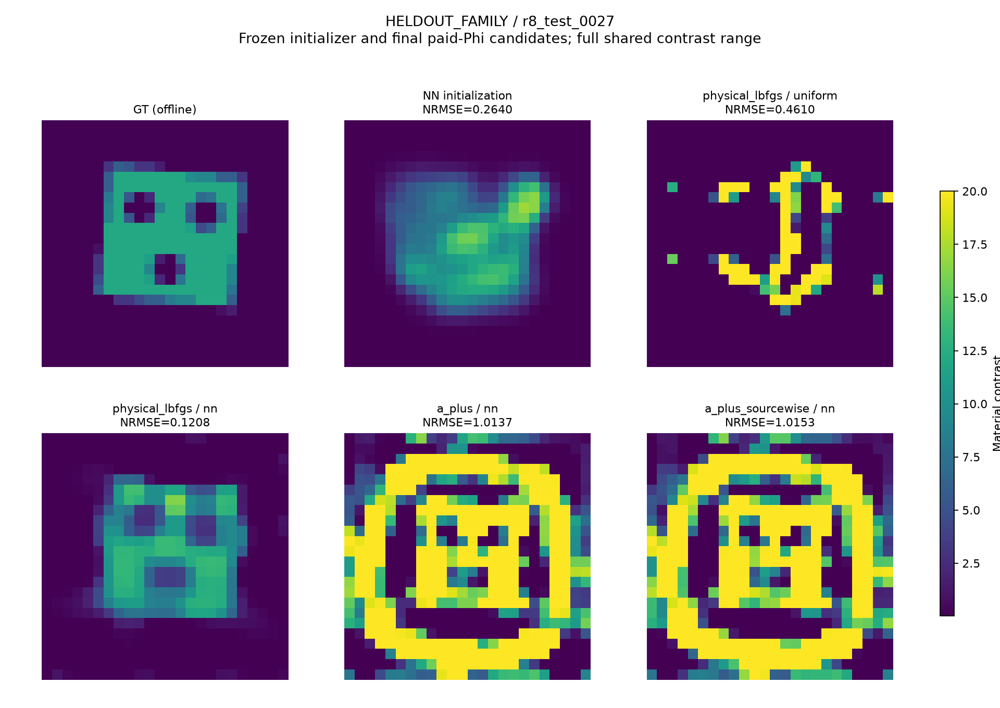

原NIE／CIE对象
Austria实际150²生成／64²反演，核对原几何、频率、噪声和自由度。A+未取得稳定优势；采集域NN修复和较长校正也保留。
原论文适配与限制轻量神经网络已经接入 sourcewise A+、global A+ 与成熟CIE管线。独立实验的主要收益却来自 NN初值＋直接原物理优化。本轮追踪这个差别，并保留经典基准、实测和三维上的负结果。
平均幅度归一材料NRMSE，越低越好。三类总体分别报告；GT只用于封存后评分。
| 方法 | 家族内 · 24 | 家族外 · 12 | 跨网格 · 6 |
|---|---|---|---|
| 均匀＋直接物理 | .24966 | .40474 | .19593 |
| NN＋直接物理 | .09647 | .16245 | .08431 |
| 均匀＋Dual-CIE | .36843 | .63825 | .32821 |
| NN＋Dual-CIE | .32822 | .56779 | .32835 |
| NN＋global A+ | .29609 | .59393 | .32933 |
| NN＋sourcewise A+ | .32182 | .59164 | .32811 |
| NN固定电流偏置＋global A+ | .31395 | .51831 | .22800 |
辅助方法最多3000步＋3000步共同校正，直接物理最多6000步。完整报告另给同实际CPU、LU、RHS预算的已付费端点；不能只据终点表宣称等成本胜出。
NN直接物理比均匀直接物理的最终平均CPU增加1.06–2.74倍：这是材料质量收益，不是该比较中的最终时间加速。相对本次辅助管线平均质量与部署费用较好，仍有等预算反例；训练另外计费。
对象0027：NN直接物理1814步达到NRMSE .12082；先经global A+虽然校正前目标更低，3000步校正后误差仍为1.01370。两种A+均实际运行，失败没有从图中删除。

硬DPCS约束和低模态表示会改变学习初值对应的物理current。欧氏正交分解不能保证经过全波算子后仍有小缺陷，更不能保证材料准确。固定物理current偏置部分修复了轨迹，同时产生确认反例。
再增加一条付费支路并按最终原Phi选最小值也不够：NN直接＋global A+在家族内改善，在家族外和跨网格反而恶化，CPU为单NN直接的2.38–3.17倍。完整机制、成本与初始化消融 →
目前支持的是学习初值的传递、候选选择失效与物理合同的机制研究。神经warm start、投影、Möbius和MM已有先例；本轮没有证明普遍优于CIE的新算法。下一步关键是提出能保留NN直接收益、并在新对象同成本下增加恢复能力的简单规则。